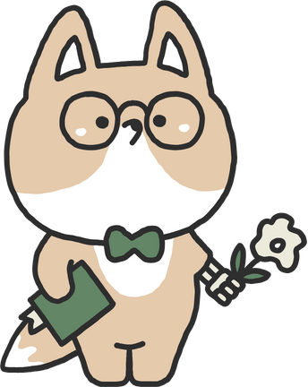
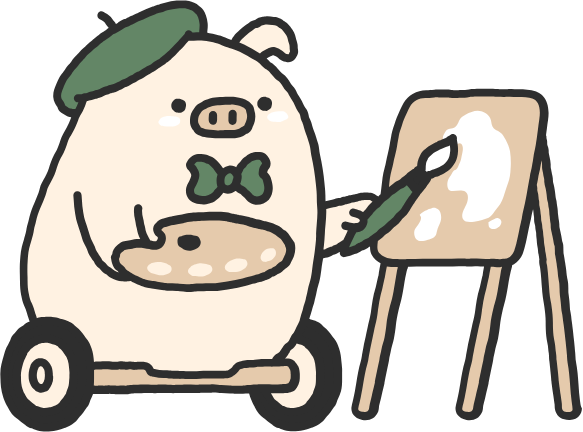

Selamat Datang di Kataloka!
Kataloka adalah platform pembelajaran bahasa Indonesia berbasis virtual yang dirancang untuk membantu pengguna mengembangkan kemampuan berbahasa secara interaktif dan menyenangkan. Di sini, kalian dapat mengeksplorasi berbagai materi pembelajaran interaktif yang dirancang untuk memperluas wawasan dan mengembangkan keterampilan kalian. Mari belajar dengan cara yang menyenangkan dan efektif bersama Kataloka!

Katapedia
Menjelajahi kosakata sehari-hari dengan Katapedia.
Ruang Belajar
Tempat belajar interaktif yang menyediakan video pembelajaran untuk membantu kalian mempelajari bahasa Indonesia secara terstruktur dan mendalam.

Cerdas Bersama
Meningkatkan pemahaman dan keterampilan bahasa Indonesia melalui tes untuk mengevaluasi perkembangan kemampuan berbahasa kalian.